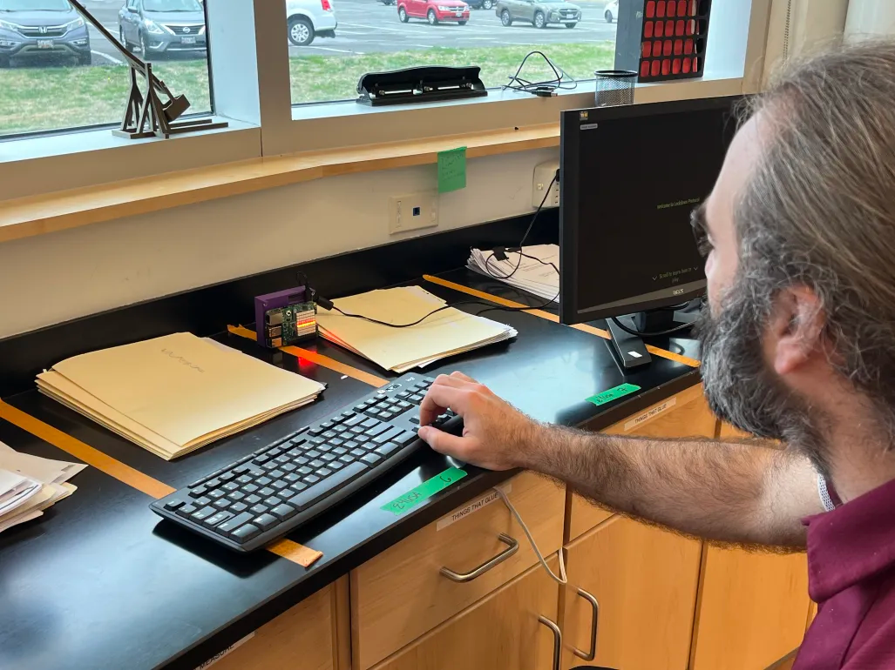
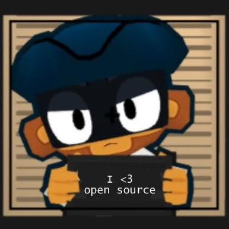

{% if restartsignal == 0%}
Welcome to Lockdown Protocol
Initiate lockdown
Scroll to learn how to play
Step 1 - Look for leads
someone has planted a catalyst that is going to uhh not explode soon
we must defuse the Catalyst to keep The CITE lab safe
The perpetrator has places puzzles around the CITE lab to keep us from defusing the catalyst
Look around the room for raspberry pi's with LED matrixes
These will contain mazes you must solve to look for the catalyst
Keep going...
Step 2 - Solve Mazes
The perpetrator has created mazes to slow us down in our endeavors to defuse the catalyst
You are the yellow dot
You must navigate your way to the green dot using the arrow keys while avoiding all red dots to clear the maze
If you touch a red dot you will be stunned for 1 second then taken back to the blue dot
Repeat this process until the catalyst has been found or time runs out

keep going pretty please 🥺
Support this project on github

{% endif %} {% if restartsignal == 1%}
{%endif%}